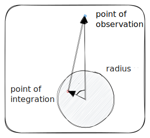
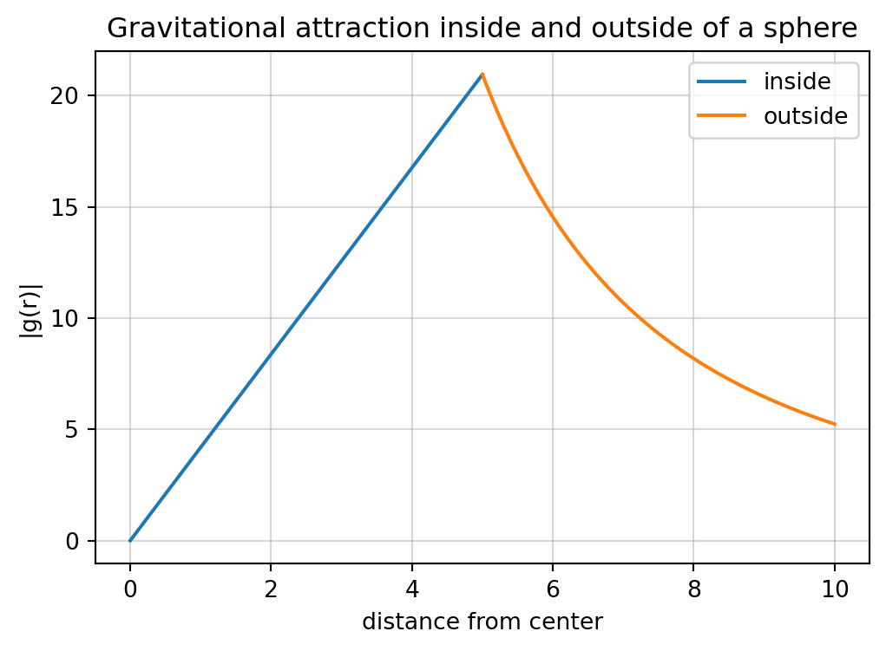
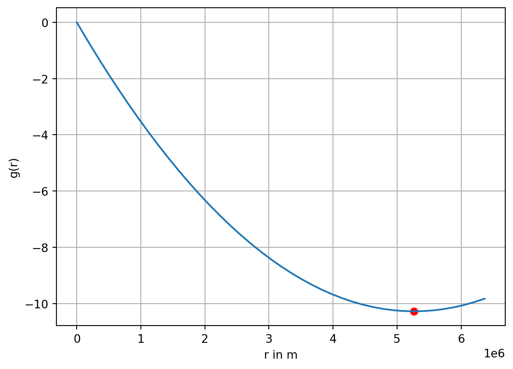

import numpy as npimport sympy as spfrom IPython.display import display, Latex, HTML, Mathfrom sympy import pi, ooshowlatex =lambda s: display(HTML(f"$${s}$$"))from sympy.assumptions import assuming, Qimport matplotlib.pyplot as plt
We want to investigate spheres with an arbitrary radial density distribution \(\rho = \rho(r)\). The following results have been described 1687 in Newton’s Philosophiae Naturalis Principia Mathematica and have since then been known as Newton’s shell theorem.
Newton stated that:
NoteNewton’s shell theorem
A spherical symmetric body causes a gravitational force on external objects as if all of its mass were concentrated in a point in its center.
If the body is a spherically symmetric shell, then no net gravitational force is exerted by the shell on any object inside regardless of the objects’s location within the shell.

Figure 5.1
The potential outside of a solid sphere of radius \(a\) and density law \(\rho=\rho(r)\) can be obtained by integration over spherical shells using the law of cosines: \[
V(r) = -f \int_{r'=0}^a \int_{\theta=0}^\pi \int_{\phi=0}^{2\pi}
\frac{\rho(r') {r'}^2 \, \mathrm d r' \sin\theta \, \mathrm d \theta \, \mathrm d \phi}{[{r'}^2 + r^2 -2 r r' \cos\theta]^{1/2}}.
\]
Figure 5.2
We depart from the potential of one spherical shell of radius \(a\) with surface density \(\rho_F\), which can be evaluated as \[
V^F(r) = -2 \pi f \rho_F \int_{\theta=0}^\pi \frac{a^2 \sin\theta \, \mathrm d \theta}{\sqrt{r^2 + a^2 - 2ar\cos\theta}}.
\]
The potential \(V^F(r)\) inside or outside of such a spherical shell with surface density \(\rho_F\) and radius \(a\) is \[
V^F(r) = -2 \pi f \frac{a}{r} \rho_F \left[ r + a - |r - a| \right].
\] Because \(r\) can be either less or greater than \(a\), we distinguish between \[
V^F(r) = \begin{cases}
-4 \pi f \rho_F \frac{a^2}{r} & \quad\text{ if } r > a \\
-4 \pi f \rho_F a & \quad\text{ if } r < a
\end{cases}
\]
We now introduce a solid sphere with a density law \(\rho = \rho(r)\). To obtain the potential \(V(r)\) outside this sphere, we integrate
To illustrate this, we make use of SymPy, a Python library for symbolic mathematics.
We first define symbolic variables.
Show the code
r, rp, a, f, rho, theta = sp.symbols("r r' a f rho theta", positive=True, real=True)
Show the code
V =-2* pi * f * rho * sp.integrate(a**2* sp.sin(theta) / sp.sqrt(r**2+ a**2-2*a*r*sp.cos(theta)), (theta, 0, pi))V.simplify()
\(\displaystyle \frac{2 \pi a f \rho \left(\sqrt{a^{2} - 2 a r + r^{2}} - \sqrt{a^{2} + 2 a r + r^{2}}\right)}{r}\)
Since \[
\sqrt{r^2 + a^2 + 2 a r} = |r + a| = r + a
\] and \[
\sqrt{r^2 + a^2 - 2 a r} = |r - a| =
\begin{cases}
r - a & \text{if } r > a \\
a - r & \text{if } r < a
\end{cases}
\] we have to be careful with the integrand.
The potential outside of the sphere is
Show the code
Voutside =-2* pi * f * rho / r * sp.integrate((r + rp - (r - rp)) * rp, (rp, 0, a))showlatex(r"V(r) = "+ sp.latex(Voutside) +r" = -f \frac{m}{r}")
We recognize that this is just the potential of an equivalent point mass of \(m = \frac{4 \pi a^{3} \rho}{3}\) concentrated at the center of the sphere.
To get the potential inside the sphere, i.e., for \(r < a\), we have to decompose the integral into two contributions.
First, we evaluate the potential due to an embedded sphere of radius \(r\), to which we add the contribution of a hollow sphere with inner radius \(r\) and outer radius \(a\): \[
V(r) = -\frac{4 \pi f}{r} \left[ \int_{r'=0}^r \rho(r') {r'}^2 \, \mathrm d r' + \int_r^a \rho(r') r r' \, \mathrm d r'\right]
\]
In the interior of a homogeneous sphere with an averaged mean density of \(\bar\rho\) we obtain for \(0 \le r \le a\)\[
V(r) = -\frac{2 \pi f \bar\rho}{3} \left(3a^2 - r^2 \right)
\]
SymPy gets the same result:
Show the code
Vinside =-4* pi * f * rho / r * (sp.integrate(rp**2, (rp, 0, r)) + sp.integrate(rp * r, (rp, r, a)))showlatex(r"V(r) = "+ sp.latex(Vinside.simplify()))
When multiplied by the unit radial vector, the attraction acquires a direction that points radially inward, toward the center of the sphere.
Show the code
fig, ax = plt.subplots(figsize=(6,4))Vr_in =lambda r: -4* np.pi /3* rVr_out =lambda r: -4* np.pi * a**3/3/ r**2ax.plot(r_in, np.abs(Vr_in(r_in)), label="inside")ax.plot(r_out, np.abs(Vr_out(r_out)), label="outside")ax.legend()ax.set_ylabel("|g(r)|")ax.set_xlabel("distance from center")ax.set_title("Gravitational attraction inside and outside of a sphere")ax.grid(alpha=0.5)

The gravitational attraction is continuous but not continuously differentiable at \(r = a\). Within the sphere, it varies linearly with the distance from the center and vanishes at \(r = 0\). Outside the sphere, the attraction follows an inverse-square law, equivalent to that of a point mass located at the sphere’s center.
5.1 Density laws
Now, we introduce non-trivial density laws, such as a linear density law \[
\rho(r) = \rho(0) - b r, \quad b > 0.
\]
This is not very helpful. Instead, we can evaluate Earth’s mass using a volume integral over a density function, e.g., \[
m_E = 4 \pi \int_0^{R_E} (\rho_0 - br) r^2 \, \mathrm d r
\] Using SymPy we obtain the expression
Show the code
m_E_int =4* pi * sp.integrate((rho_0 - b * r) * r**2, (r, 0, R_E))m_E_int.simplify()
\(\displaystyle \frac{\pi R_{E}^{3} \left(- 3 R_{E} b + 4 \rho_{0}\right)}{3}\)
This result still contains two unknown parameters \(b\) and \(\rho_0\).
We exploit the fact that there must hold \[
\rho(R_E) = \rho(0) - b R_E.
\]
The density at the Earth’s surface is about \(2700\)\(kg/m^3\).
Based on this linear density law, the Earth’s density decreases at a rate of \(1.77\,\mathrm{kg/m^3}\) per kilometer from the planet’s center.
5.2 Gravitational attraction inside the Earth
It is known that the gravitational potential inside a sphere with a radially symmetric density function is \[
V(r) = -\frac{4 \pi f}{r} \left[ \int_{r'=0}^r \rho(r') {r'}^2 \, \mathrm d r' + \int_r^{R_E} \rho(r') r r' \, \mathrm d r'\right]
\] The first integral amounts for the potential at the surface of a sphere with radius , whereas the second computes the potential taken at the inner surface of a hollow sphere.
With the constants derived above we want to evaluate these integrals.
Show the code
i1 =-4* pi * f / r * sp.integrate((rho_0 - b * rp) * rp**2, (rp, 0, r))showlatex(r"-\frac{4 \pi f}{r} \int_{r'=0}^r (\rho_0 - b r') {r'}^2 \,\mathrm d r' = "+ sp.latex(i1.simplify()))
$$-\frac{4 \pi f}{r} \int_{r'=0}^r (\rho_0 - b r') {r'}^2 \, \mathrm d r' = \frac{\pi f r^{2} \left(3 b r - 4 \rho_{0}\right)}{3}$$
Show the code
i2 =-4* pi * f * sp.integrate((rho_0 - b * rp) * rp, (rp, r, R_E))showlatex(r"-\frac{4 \pi f}{r} \int_{r'=r}^{R_E} (\rho_0 - b r') r {r'} \,\mathrm d r' = "+ sp.latex(i2.simplify()))
$$-\frac{4 \pi f}{r} \int_{r'=r}^{R_E} (\rho_0 - b r') r {r'} \, \mathrm d r' = \frac{2 \pi f \left(2 R_{E}^{3} b - 3 R_{E}^{2} \rho_{0} - 2 b r^{3} + 3 r^{2} \rho_{0}\right)}{3}$$
Next, we add both contributions to obtain the potential inside the Earth.
Show the code
#V = sp.Function("V")V = i1 + i2
Show the code
showlatex(r"V(r) = "+ sp.latex(V.simplify()))
$$V(r) = \frac{\pi f \left(4 R_{E}^{3} b - 6 R_{E}^{2} \rho_{0} - b r^{3} + 2 r^{2} \rho_{0}\right)}{3}$$
We obtain the gravitational attraction by taking the gradient of \(V\) in the direction of \(\mathbf r\):
\[
g(r) = -\nabla V(r) \cdot \hat{\mathbf r}
\]
Show the code
g =-sp.diff(V, r)showlatex(r"g(r) = "+ sp.latex(g.simplify()))
$$g(r) = \frac{\pi f r \left(3 b r - 4 \rho_{0}\right)}{3}$$
5.3 Visualization of the result
We plot the curve of \(g(r)\) inside the Earth.
Further, we check if \(g(r)\) has an extremum inside the Earth.
Show the code
f_ =6.674e-11g_num =lambda r: np.pi * f_ * r * (3* b_num * r -4* rho_num) /3
The extremal value of \(g(r)\) in the interior of the Earth appears at \(r=5.26 \times 10^6\) m, i.e., at a depth \(d\) of 1105 km.
Show the code
rr = np.linspace(0, 6.367e6, 41)
Show the code
plt.plot(rr, g_num(rr))plt.scatter(rextrem, g_num(rextrem), color='r')plt.grid(True)plt.xlabel("r in m")plt.ylabel("g(r)");

5.4 Moment of inertia
There are two constraints for density models: The mass of the Earth, and its moment of inertia. Both are moments of the density distribution. The mass is the second moment of the radial density distribution, whereas the mean moment of inertia is the scaled fourth moment of the radial density distribution. The moment of inertia can be inferred from a thin spherical shell of radius \(a\),
\[
I = \frac{2}{3} m a^2.
\]
The contribution of a small mass \(\mathrm d m\) is therefore \[
\mathrm d I = \frac{2}{3} a^2 \, \mathrm d m.
\] The total moment of intertia an be calculated with the integral \[
I=\frac{2}{3} \int\limits_0^{R_E} \rho(r) r^2 \, \mathrm d V =
\frac{8\pi}{3} \int\limits_0^{R_E} \rho(r) r^4 \, \mathrm d r,
\] with the help of which we compute the moment of inertia factor \(\alpha\), a dimensionless number, where \[
\alpha = \frac{I}{mR_E^2}.
\] This factor is \(0.4\) for a solid sphere.
\(\alpha\) should be smaller for a sphere when there is an increasing density with depth.
For our density model, we observe \(\alpha=0.3319\), which is slightly more than reported in the literature, where \(\alpha=0.3307144\) (Williams, 1994).